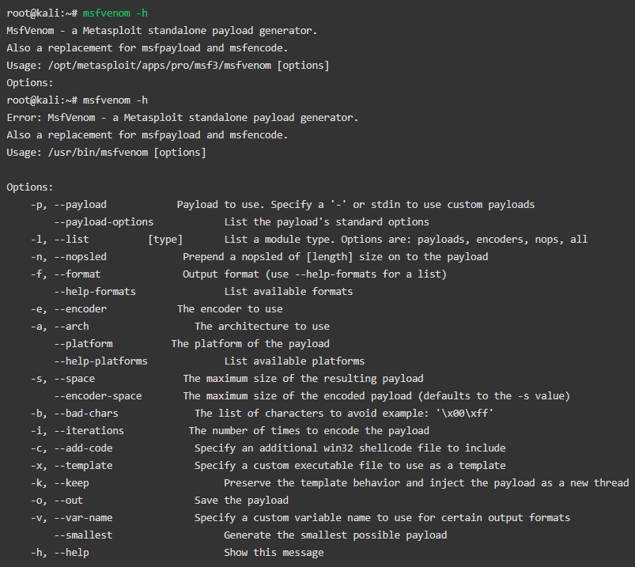

MSFvenom
Metasploit is a penetration testing tool and is often listed as the world’s most widely used pen-testing tool. There is a free version but with limited features. The pro version starts at $5,000 with full features starting at $15,000 per year. In simple terms, Metasploit makes hacking easier. It offers a command-line interface, but the GUI-based version is available in the Pro version. It offers a PS Exec feature that can kill a process from another computer to one that is frozen. It integrates with Nmap, SNMP scanning, and Windows patch enumeration and most reconnaissance tools integrate with Metasploit. Metasploit includes a massive database with exploits that will work to crack open a system weakness. It also has tools that help with privilege escalation, pass the hash, pivoting tools, packet sniffing, keyloggers, and screen capture among many more features. Metasploit can also be modified to the user's needs. It is a total package solution.
Previously, MSFpayload was a command-line instance of Metasploit which was used to generate and output all the different types of shellcode that were within and available to use in Metasploit. MSFencode was used for exploiting as well. It was a separate tool that was meant to be used after a shellcode has been generated from MSFpayload. It needs to be encoded to suit the target for it to function properly.
Since 2015 there has been MSFvenom which gives you both of those tools together, it has standardized command line options and it is faster than the previous tools separately.
Why exactly is MSFvenom important? It is important because of what shellcodes can do. Today many hackers use malicious windows shellcode as a main attack vector which have been used to exploit many corporations. What a hacker does is ‘booby-traps’ a file with malicious code and sends that file to someone. The file could be labeled as something important, for example: if someone is at work, it would be labeled as something work-related. Because it is related to that person, usually they open the file. By doing that, because the hacker has bound the shellcode into that file with software, a hacker can then gain access to the computer and has successful infiltrated that system.
MSFvenom is a simple tool to use and it has several options. You can start off using the tool with these options:
Video Resources
Generating Shellcode with MSFvenom
Additional Resources
- Introducing MSFvenom
- How to use MSFvenom
- MSFvenom Cheat Sheet
- MSFpayload
- MSFencode
- A cyber hacker's toolkit: reconnaissance